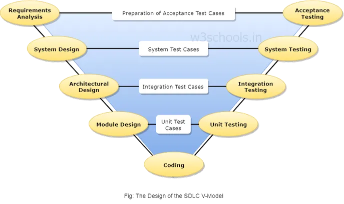

The Unified Modeling Language (UML) is a diagramming notation (language) that lets you visualize systems and software.
It's one of the most popular forms of diagramming in software development and became an ISO standard in 1997.
Since then, there have been a few updates to add extra UML diagram types and to support new technologies in programming.
There are two main categories and 14 different types of UML diagrams, each of which is used in a different situation.
Structure diagrams: show the static relationships between the components in the system.
Behavior diagrams: show how the components in the system react to each other,
they capture how the system changes, and in some diagrams, how it changes over time.
Use case diagrams in UML are used during the requirements phase of software development -
they usually put the system requirements into a diagram format,
and it's easy to see what actions a system must support at a glance.
Of course, there will be many use cases for your system,
and therefore you will usually need to draw many use case diagrams!
Along with other UML diagrams, such as activity, sequence and component diagrams,
use case diagrams help you to visualize your software and requirements,
before jumping in and starting to program.
The basic idea behind this method is to develop a system through repeated cycles and in smaller portions at a time,
allowing software developers to take advantage of what was learned during development of earlier parts or versions of the system.
Learning comes from both the development and use of the system,
where possible key steps in the process start with a simple implementation of a subset of the software requirements and iteratively
enhance the evolving versions until the full system is implemented.
At each iteration, design modifications are made and new functional capabilities are added.
In this Prototype Model before designing phase, a prototype is developed, tested, reviewed and approved by the customer,
after that design will be ready for coding, testing, installation and maintenance will takes place.
This prototype is prepared based on the customer requirements.
The spiral model method is used for risk management that combines the iterative development process model with elements of the Waterfall model.
The spiral model is used by software engineers and is favored for large, expensive and complicated projects.
The V-model is a type of SDLC model where process executes in a sequential manner in V-shape.
It is also known as Verification and Validation model.
It is based on the association of a testing phase for each corresponding development stage.
Development of each step directly associated with the testing phase.

The Agile software development model was mainly intended for helping developers build a project which can adapt to
transforming requests quickly.
So, the most important endeavor for developing the Agile model is to make easy and rapid project achievement.
For attaining this task, developers need to correcting the progression to the project by eliminating activities which may not be crucial
for that specific project.
Agile SDLC breaks down the product into small incremental builds which,
the customer is able to see the result and understand whether the software product satisfied with it or not.
Which is one of the advantages, to implement or fix during development.